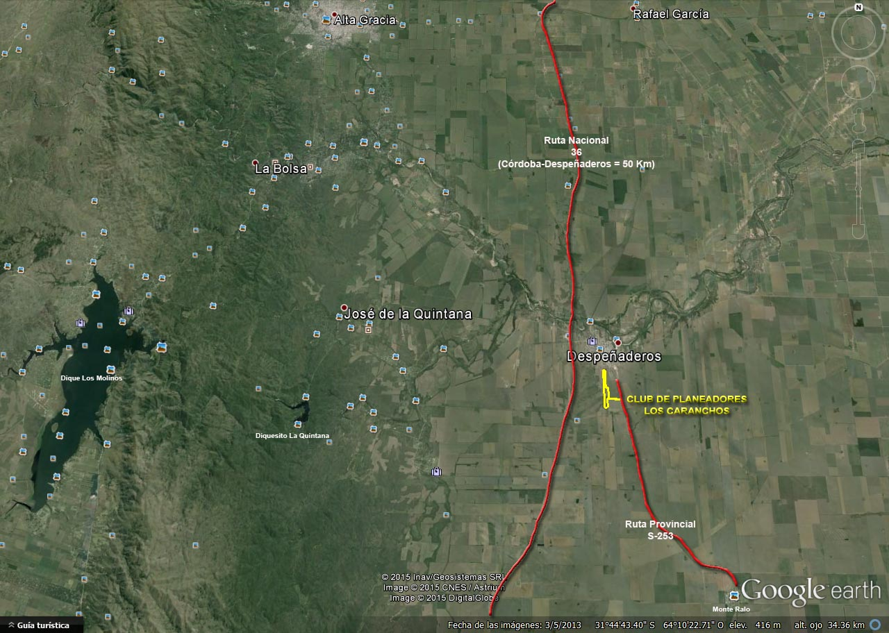
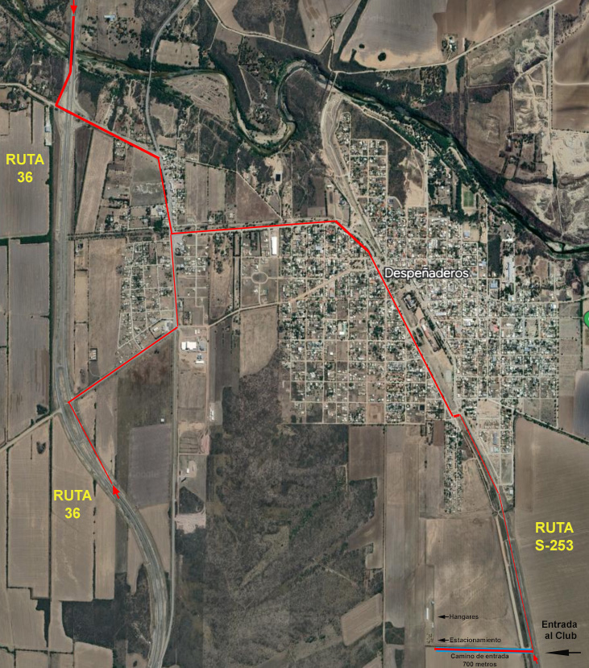
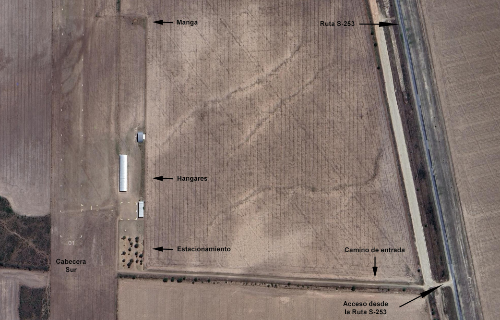

El Club de Planeadores Los Caranchos está ubicado al sur de Despeñaderos. Desde la rotonda de entrada a la ciudad al sur, el camino de acceso a nuestras instalaciones se encuentra a unos 1.500 metros al sur sobre la ruta S-253 que une esta localidad con Monte Ralo, Corralito y la ciudad de Rio Tercero.
Despeñaderos es una localidad situada en el departamento Santa María, provincia de Córdoba (Argentina). Se encuentra situada sobre la RN 36, A 20 km de Alta Gracia, 50 km de la Ciudad de Córdoba y 60 km de la Ciudad de Embalse (Córdoba) (Valle de Calamuchita).
|
Inicio
|
Nuestra pista de aterrizaje está autorizada como Aeródromo Privado No Controlado (DLC) 01/19 1002x40 M, y sus coordenadas GPS son:
Coordenadas del acceso al Club desde la Ruta S-253 km 1,5: 31°50'10'S 64°16'59'W
Aqui podemos ver croquis realizados sobre imagenes satelitales del club   
|
|||||||||||||
|
|
||||||||||||||